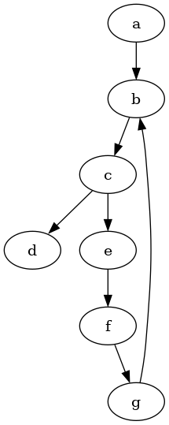

author: niplav, created: 2022-03-04, modified: 2022-03-26, language: english, status: notes, importance: 8, confidence: likely
Representing inconsistent preferences with specific mathematical structures can clarify thoughts about how to make those preferences consistent while only minimally changing them. This is discussed in the case of preferences over world states, represented by directed graphs; and preferences over lotteries of world states, represented by vector fields over probability simplices. Implications for scenarios such as ontological crises are discussed.
A kind of God-made (or evolution-created) fairness between species is also unexpectedly found.
– Yew-Kwang Ng, “Towards Welfare Biology: Evolutionary Economics of Animal Consciousness and Suffering” p. 1, 1995
Random testing is simple in concept, often easy to implement, has been demonstrated to effectively detect failures, is good at exercising systems in unexpected ways (which may not occur to a human tester), and may be the only practical choice when the source code and the specifications are unavailable or incomplete.
– Tsong Yueh Chen/Fei-Ching Kuo/Robert G. Merkel/T.H. Tse, “Adaptive Random Testing: the ART of Test Case Diversity”, 2010
Consider an agent which displays (von Neumman-Morgenstern) inconsistent preferences, for example choosing two incompatible options in the two scenarios in the Allais paradox. We might want to interact with that agent, e.g. trade with it, help it, or generally know how it will act. But how to go about that if the agent displays inconsistent preferences?
One way we could approach the problem is by trying to turn those
inconsistent preferences consistent, i.e. constructing a function $f: \succsim \mapsto \succeq$
that takes in an inconsistent preference and transforms it into a
consistent preference, while retaining as much of the original structure
of the preference as possible (it would make little sense if we replaced
the original preference relation with indifference over all options).
Representing inconsistent preferences turns out to be key to constructing
$f$. I discuss two options for representing subsets of all possible
inconsistent preferences:
When we have discrete sets of options $O$, we can represent some
inconsistent preferences by using a directed graph $G_{\succsim}=(V,E_{\succsim}), V=O, E_{\succsim} \subseteq O \times O$.
The presence of an edge $(o_1, o_2)$ would mean that $o_1 \succsim
o_2$, that is $o_1$ is preferred to $o_2$.
The consistent equivalent to an inconsistent preference represented by a
directed graph would be a path graph $G_{\succeq}=(V, E_{\succeq})$
over the same set of vertices $O$. The method for transforming
$G_{\succsim}$ into $G_{\succeq}$ would be by adding/deleting/merging
the minimal amount vertices from $E_{\succsim}$.
This leads to an interesting ethical consideration: is it a larger
change to a preference relation to add new information, combine
existing information, or remove information? It is discussed how to
incorporate those weights into an algorithm for minimally transforming
$G_{\succsim}$ into $G_{\succeq}$.
The two relevant von Neumman-Morgenstern axioms are completeness and transitivity, with a directed graph one can also represent incompleteness and intransitivity.
Incompleteness (or incomparability) between two options $o_1, o_2$
can be represented by not specifying an edge between the two options,
that is $(o_1, o_2) \not \in E, (o_2, o_1) \not \in E$.
Intransitivity can be represented by cycles in the graph:

With option set $\{a,b\}$ have preference $a \succsim b$, with
option set $\{a,b,c\}$ have preferences
$b \succsim a, a \succsim c, b \succsim c$.

"Zipping" DAGs.
Vector field over the probability simplex over the options (representing local preferences over lotteries).
Curl in the vector field?
Can only exist with incompleteness?
Find mapping from vector field to another that makes the vector field consistent by minimizing the amount of turning/shrinking the vectors have to perform.
?
Look into extremal graph theory.
Learn human values, check if known inconsistencies are encoded (to ensure learning at the correct level of abstraction), then make consistent.
If you know a mapping between objects from human to AI ontology, you could find the mapping from the (consistent) human probability simplex to the AI simplex?
$G$ have a unique graph $G'$ so that $G$ is the transitive closure of $G'$?